壓縮工具該有的，都有
開啟 zip、7z、rar、tar、iso 等數十種格式。建立 zip、7z 與 tar，可用 AES-256 密碼。瀏覽、搜尋、把檔案拖到檔案總管，也能把壓縮檔轉成其他格式；原始檔會留著，由你決定要不要刪除。
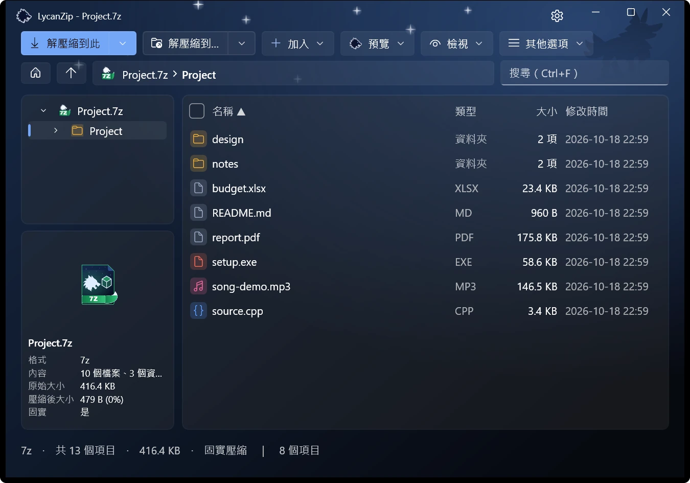
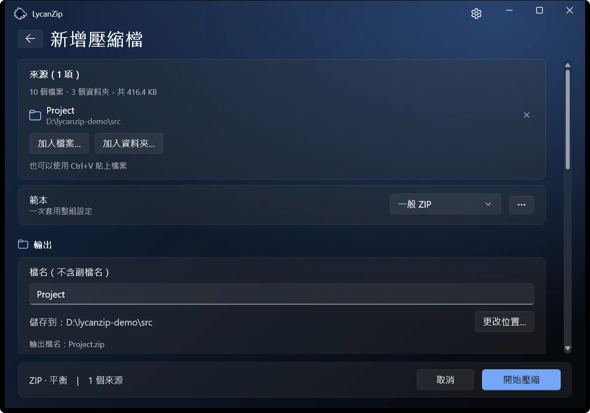
Windows 10 · Windows 11 專用
Zip、7z、tar 等格式，介面與操作都像 Windows 11。免費、開放原始碼、沒有廣告、不蒐集任何資料。

1.1 新功能：預覽窗格、閱讀模式、密碼管理員、壓縮檔格式轉換，以及新增五種語言。 看更新內容
開啟 zip、7z、rar、tar、iso 等數十種格式。建立 zip、7z 與 tar，可用 AES-256 密碼。瀏覽、搜尋、把檔案拖到檔案總管，也能把壓縮檔轉成其他格式；原始檔會留著，由你決定要不要刪除。


Big5、GBK、Shift-JIS、EUC-KR 檔名的舊 zip 會自動偵測。升級這類壓縮檔後，檔名會以 UTF-8 儲存，在任何電腦上都能正確顯示；資料本身原樣複製。
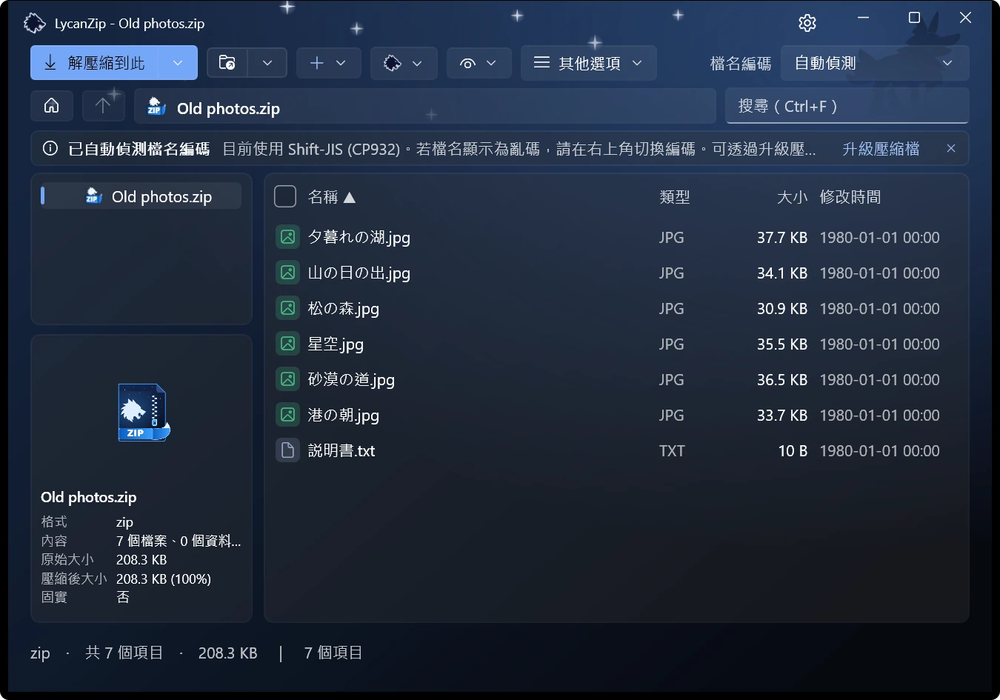
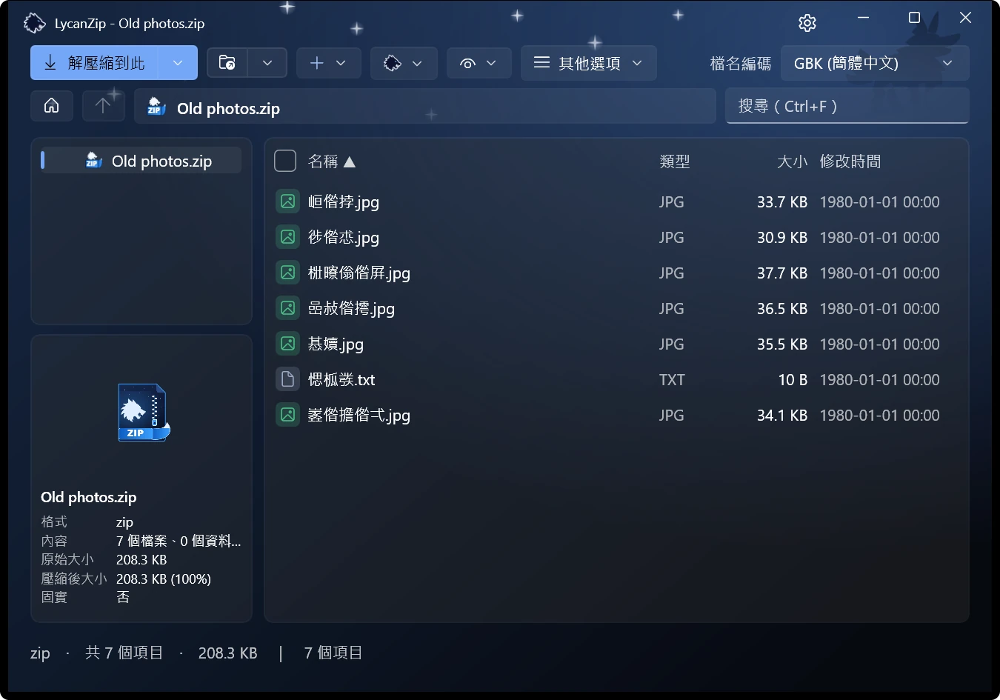
選取檔案，預覽窗格就會顯示它：圖片、文字、PDF 與音訊。圖片也能在有縮圖列、縮放與動畫的檢視器開啟；音樂可用內建播放器播放，並顯示標籤。
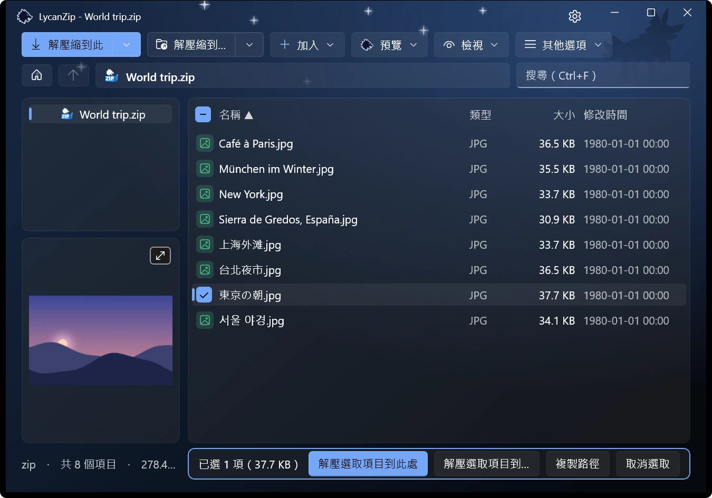
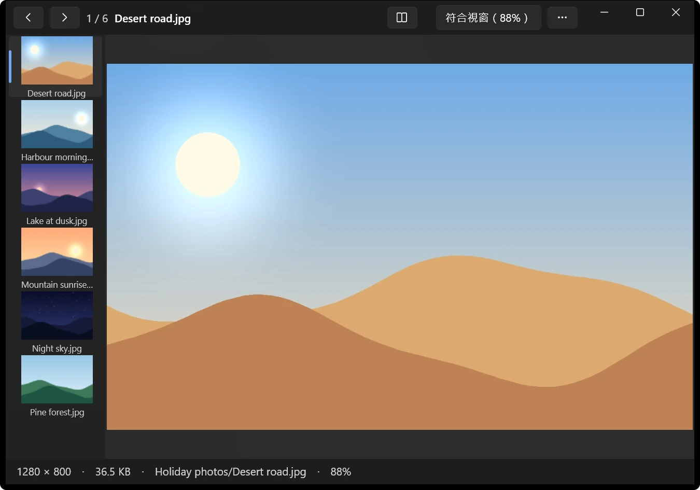
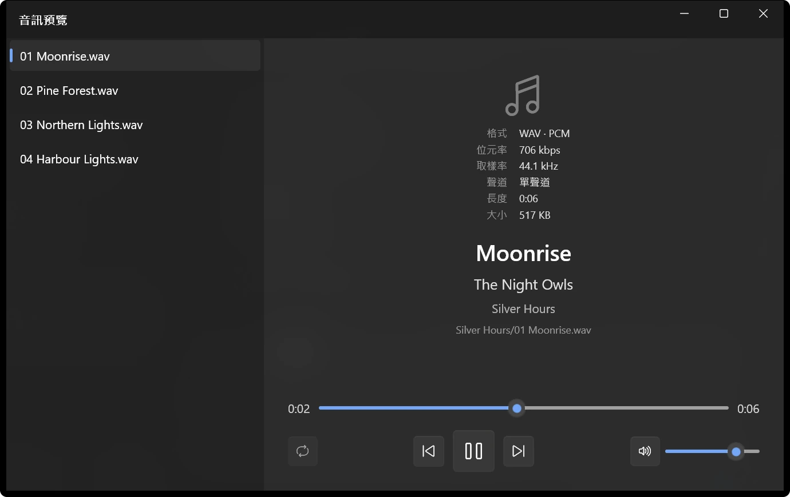
整本書依序閱讀，可以跨資料夾，兩頁並排，也可以由右至左。每本書都會記住讀到哪一頁。.cbz、.cbr、.cb7 與 .cbt 會直接以閱讀模式開啟。
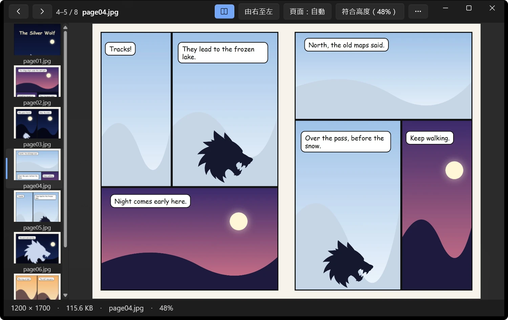
這次用過的密碼與已儲存的密碼會先試過，才問你。儲存的密碼依你的 Windows 帳戶加密，也可以加上主密碼。不會傳送到任何地方。
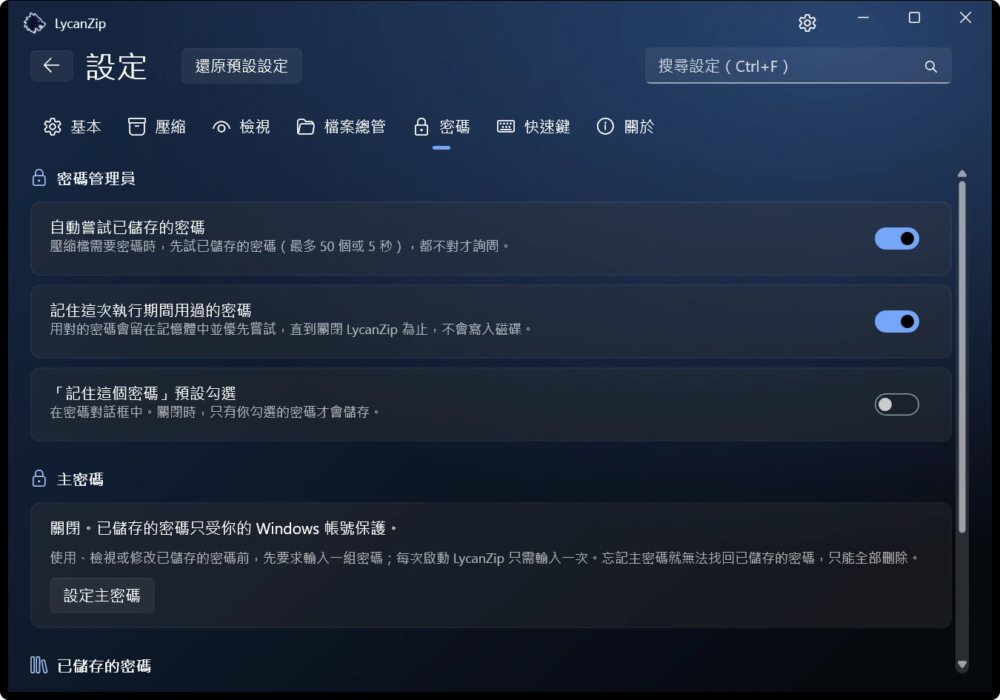
項目直接出現在 Windows 11 選單的第一層，不必先按「顯示更多選項」。Windows 只允許簽章過的套件這麼做，所以它只在 Microsoft Store 版提供。其他版本使用傳統選單。
淺色或深色，六種強調色，或直接跟隨 Windows。音效（兩組）與動畫都是選用，可以關閉。
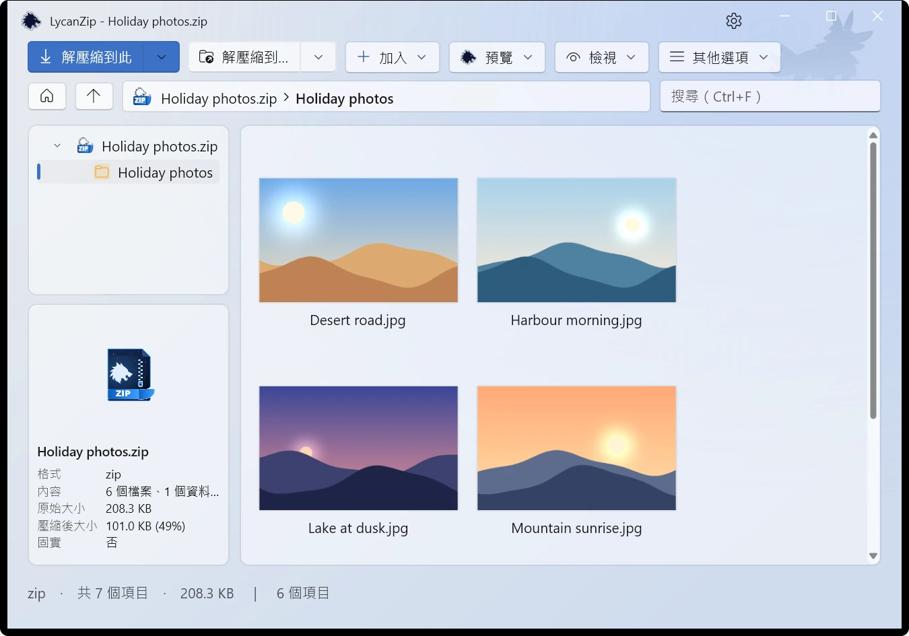
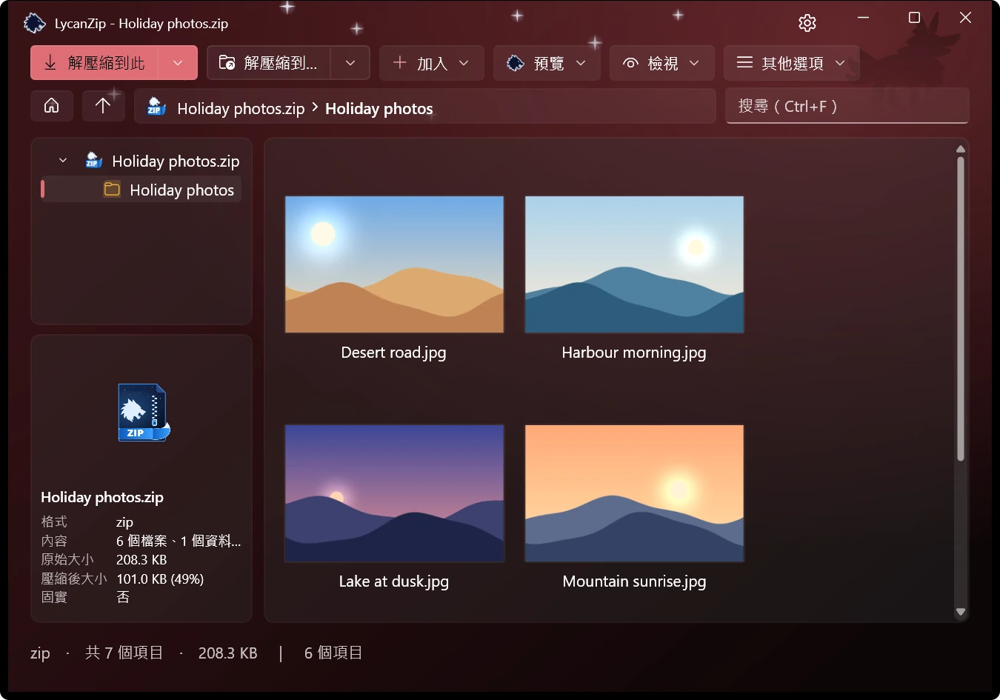
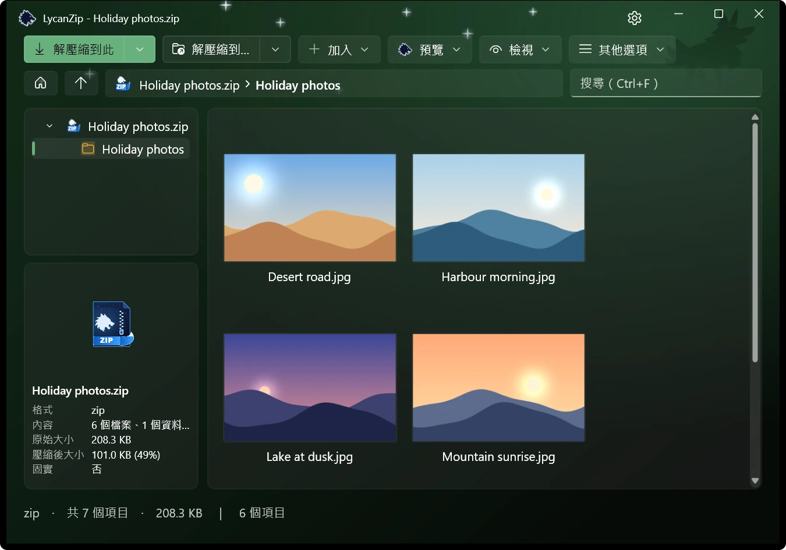
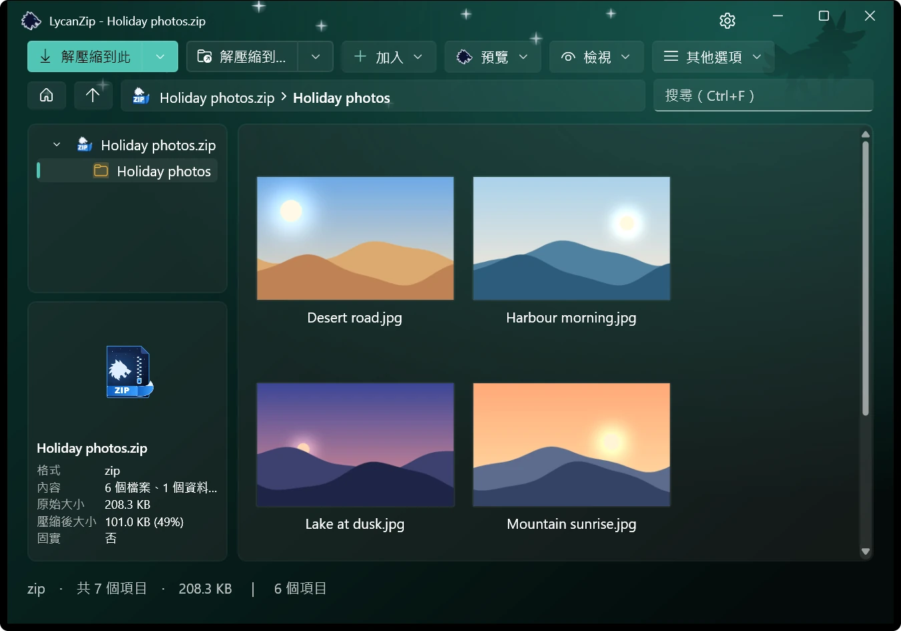
在 zip、7z 與 tar 裡新增、刪除、重新命名、取代，或用你自己的編輯器修改檔案再存回去。全程在安全的副本上進行。
沒有遙測、沒有廣告、不蒐集任何資料。另外還有三種方法，檢查你要開啟的東西：
透過 Windows AMSI，用你自己的防毒軟體掃描壓縮檔，不必解壓縮到磁碟。
計算任何檔案、資料夾或壓縮檔的雜湊值。按兩下就能驗證 .sha256 檔。
按一下就開啟該檔案雜湊值的 VirusTotal 頁面。只送出雜湊值，絕不上傳檔案。
不安全的路徑會被拒絕，不會跟隨連結，也能攔下壓縮炸彈。
英文、繁體中文、簡體中文、日文、韓文、德文、西班牙文與法文。
利用空閒時間製作。如果它幫你省了時間，請杯咖啡很有幫助；回報問題也是。